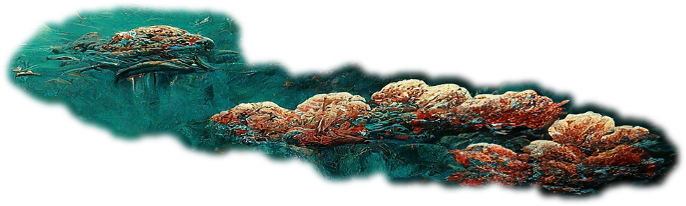
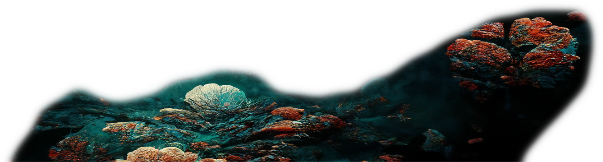

« Projet scrollytelling créé dans le cadre du cours Optimisation Web - Intégration multimédia - Collège Montmorency. © 2024 - Conception : Abdel Ali Djeral et Yavuz-Selim Gucluer de la phase concept | Développement Web : Abdel Ali Djeral.